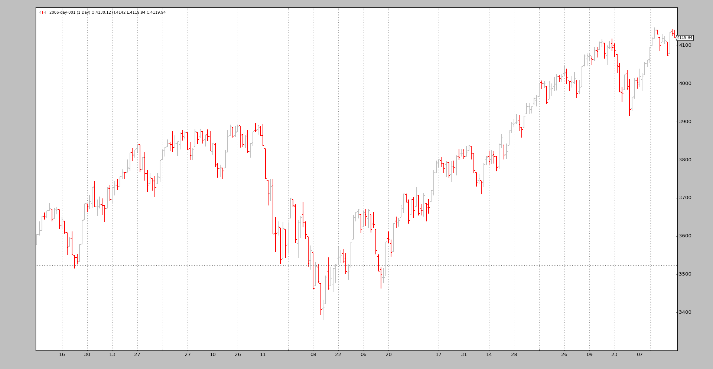

Data Resampling¶
When data is only available in a single timeframe and the analysis has to be done for a different timeframe, it’s time to do some resampling.
“Resampling” should actually be called “Upsampling” given that one goes from a source timeframe to a larger time frame (for example: days to weeks)
backtrader has built-in support for resampling by passing the original data
through a filter object. Although there are several ways to achieve this, a
straightforward interface exists to achieve this:
Instead of using
cerebro.adddata(data)to put adatainto the system use
cerebro.resampledata(data, **kwargs)
There are two main options that can be controlled
- Change the timeframe
- Compress bars
To do so, use the following parameters when calling resampledata:
timeframe(default: bt.TimeFrame.Days)Destination timeframe which to be useful has to be equal or larger than the source
compression(default: 1)Compress the selected value “n” to 1 bar
Let’s see an example from Daily to Weekly with a handcrafted script:
$ ./resampling-example.py --timeframe weekly --compression 1
The output:

We can compare it to the original daily data:
$ ./resampling-example.py --timeframe daily --compression 1
The output:
{kind=link}
The magic is done by executing the following steps:
- Loading the data as usual
- Feeding the data into cerebro with
resampledatawith the desired parameters:
timeframecompression
The code in the sample (the entire script at the bottom).
# Load the Data
datapath = args.dataname or '../../datas/2006-day-001.txt'
data = btfeeds.BacktraderCSVData(dataname=datapath)
# Handy dictionary for the argument timeframe conversion
tframes = dict(
daily=bt.TimeFrame.Days,
weekly=bt.TimeFrame.Weeks,
monthly=bt.TimeFrame.Months)
# Add the resample data instead of the original
cerebro.resampledata(data,
timeframe=tframes[args.timeframe],
compression=args.compression)
A last example in which we first change the time frame from daily to weekly and then apply a 3 to 1 compression:
$ ./resampling-example.py --timeframe weekly --compression 3
The output:

From the original 256 daily bars we end up with 18 3-week bars. The breakdown:
- 52 weeks
- 52 / 3 = 17.33 and therefore 18 bars
It doesn’t take much more. Of course intraday data can also be resampled.
The resampling filter supports additional parameters, which in most cases should not be touched:
bar2edge(default:True)resamples using time boundaries as the target. For example with a “ticks -> 5 seconds” the resulting 5 seconds bars will be aligned to xx:00, xx:05, xx:10 …
adjbartime(default:True)Use the time at the boundary to adjust the time of the delivered resampled bar instead of the last seen timestamp. If resampling to “5 seconds” the time of the bar will be adjusted for example to hh:mm:05 even if the last seen timestamp was hh:mm:04.33
Note
Time will only be adjusted if “bar2edge” is True. It wouldn’t make sense to adjust the time if the bar has not been aligned to a boundary
rightedge(default:True)Use the right edge of the time boundaries to set the time.
If False and compressing to 5 seconds the time of a resampled bar for seconds between hh:mm:00 and hh:mm:04 will be hh:mm:00 (the starting boundary
If True the used boundary for the time will be hh:mm:05 (the ending boundary)
boundoff(default:0)Push the boundary for resampling/replaying by an amount of units.
If for example the resampling is from 1 minute to 15 minutes, the default behavior is to take the 1-minute bars from 00:01:00 until 00:15:00 to produce a 15-minutes replayed/resampled bar.
If
boundoffis set to1, then the boundary is pushed1 unitforward. In this case the original unit is a 1-minute bar. Consequently the resampling/replaying will now:
- Use the bars from 00:00:00 to 00:14:00 for the generation of the 15-minutes bar
The sample code for the resampling test script.
from __future__ import (absolute_import, division, print_function,
unicode_literals)
import argparse
import backtrader as bt
import backtrader.feeds as btfeeds
def runstrat():
args = parse_args()
# Create a cerebro entity
cerebro = bt.Cerebro(stdstats=False)
# Add a strategy
cerebro.addstrategy(bt.Strategy)
# Load the Data
datapath = args.dataname or '../../datas/2006-day-001.txt'
data = btfeeds.BacktraderCSVData(dataname=datapath)
# Handy dictionary for the argument timeframe conversion
tframes = dict(
daily=bt.TimeFrame.Days,
weekly=bt.TimeFrame.Weeks,
monthly=bt.TimeFrame.Months)
# Add the resample data instead of the original
cerebro.resampledata(data,
timeframe=tframes[args.timeframe],
compression=args.compression)
# Run over everything
cerebro.run()
# Plot the result
cerebro.plot(style='bar')
def parse_args():
parser = argparse.ArgumentParser(
description='Pandas test script')
parser.add_argument('--dataname', default='', required=False,
help='File Data to Load')
parser.add_argument('--timeframe', default='weekly', required=False,
choices=['daily', 'weekly', 'monhtly'],
help='Timeframe to resample to')
parser.add_argument('--compression', default=1, required=False, type=int,
help='Compress n bars into 1')
return parser.parse_args()
if __name__ == '__main__':
runstrat()